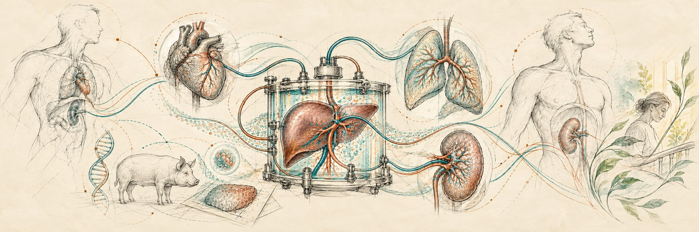

Oxygen affinity
Reversible binding and the local pO₂ gradient govern release. Historical HBOC-201 is reported near P50 40 mmHg at 37°C; BHOC-specific characterization is required.

The cell, the organ and the organism each change their oxygen demand. BHOC Transplant asks whether a characterized oxygen carrier, with molecularly responsive oxygen release, can help sustain function from donor care through cooling, warming, transport, implantation and recovery.
Research concept across separate donor, ex-vivo and recipient protocols. A P50 near 40 mmHg at 37°C is described for historical HBOC-201; product-specific BHOC behavior, transplant outcomes and time gained remain to be established.
Stop thinking only about blood. Think about life, function and useful time.
Hemoglobin binds oxygen reversibly and releases it as local oxygen pressure falls. This inherent molecular behavior is central to the BHOC Transplant research concept; the device and clinical protocol determine how much carrier reaches the tissue.
Reversible binding and the local pO₂ gradient govern release. Historical HBOC-201 is reported near P50 40 mmHg at 37°C; BHOC-specific characterization is required.
Test carrier function during cooling, cold support and gradual rewarming. P50 and release change with temperature, pH and formulation; P50 ≈ 40 is not a constant from 4 to 37°C.
Match carrier concentration and perfusion conditions to each stage. Measure extraction, ATP, lactate, vascular resistance and organ-specific function against controls.
One research vision across donor, graft and recipient, with separate permissions and measurable questions at each stage. Evidence and our proposed concept open beneath every stage.
Kidney, liver, heart, lung and other organs need their own perfusion and function tests. The source changes the protocol.
A person with organ failure may be in hospital or, for some kidney candidates, on dialysis. Assessment, matching and recipient care run in parallel with preparation of the graft.
For xenografts, donor-animal gene editing occurs before organ retrieval. Possible gene delivery to an isolated organ inside the preparation centre is a separate experimental question. BHOC has not been shown to modify genes or reduce rejection.
Consider whether oxygen-support research could contribute before retrieval while clinical care, authorization and death determination remain independent.
The current BHOC evidence map does not establish a donor-side clinical benefit. Any proposed intervention before procurement requires its own ethical, clinical and regulatory assessment.
BHOC Transplant Evidence Hub ↗
Repository evidence map · application-specific validation pendingUnder a separately authorized donor protocol, could characterized oxygen support protect tissue function before retrieval? Predefine who may receive it, when, and what measurements matter. The concept does not defer donation authorization or death determination.
After authorized retrieval, study oxygen availability during cooling and transfer to the organ centre. Measure each organ separately.
The BHOC evidence map includes historical oxygen-carrier work in preservation and perfusion. It does not establish BHOC-specific benefit during cooling or transport.
BHOC Transplant Evidence Hub ↗
Repository evidence map · application-specific validation pendingCould a reproducible carrier maintain useful oxygen availability while the graft cools and travels? Map temperature-specific affinity, oxidation, perfusate stability, tissue oxygenation and injury against current preservation controls.
Use organ-specific perfusion to assess viability. Study immune or molecular interventions only within their own protocols, including a distinct xenograft path.
Organ-perfusion studies offer a setting for viability assessment. Gene-edited xenografts and ex-vivo gene delivery are separate research fields; the current BHOC map does not establish compatibility or reduced immunogenicity.
BHOC Transplant Evidence Hub ↗
Repository evidence map · application-specific validation pendingCan a measured oxygen-carrier perfusate support assessment and organ preparation across kidney, liver, heart and lung? In separate experiments, assess compatibility with ex-vivo gene delivery, immune conditioning or engineered grafts. BHOC supplies no genetic edit itself.
Test carrier performance from cold to warm under measured pO₂, pH and flow conditions before transplantation.
Historical HBOC-201 research includes cold-to-warm perfusion. BHOC-specific oxygen-affinity curves across temperature and any gain in procedural time have yet to be established.
BHOC Transplant Evidence Hub ↗
Repository evidence map · application-specific validation pendingCan controlled oxygen availability preserve function during the cold-to-warm transition, and perhaps make the available procedural time more productive? Compare measured transition time, metabolism, oxidation and tissue injury against standard controls before claiming time gained.
The prepared organ meets the matched recipient. Examine graft oxygenation at handoff and the early reperfusion period.
Historical oxygen-carrier publications include organ perfusion before transplantation. They cannot be read as a recipient-side BHOC efficacy claim or generalized across organs.
BHOC Transplant Evidence Hub ↗
Repository evidence map · application-specific validation pendingDoes a specified ex-vivo oxygen-support protocol improve graft function at reperfusion? Any infusion into the recipient is a different clinical study with its own dose, safety and authorization.
Follow the person and the graft: recovery is meaningful only when measured as organ function and patient outcomes.
Post-transplant follow-up in historical perfusion research does not establish that BHOC causes healing, creates stem cells or prevents rejection.
BHOC Transplant Evidence Hub ↗
Repository evidence map · application-specific validation pendingIn a separately approved recipient study, could measured oxygen delivery support early graft function? Predefine organ-specific outcomes, microvascular measures and safety. “Healing” here describes a research goal, not a demonstrated BHOC clinical effect.
As local pO₂ falls, hemoglobin’s binding equilibrium favors oxygen release. Choose a demand state to see the idea. The dots are a schematic, not a measured BHOC dose or release curve.
Illustrative interface only. No clinical units or claimed response time.
At a lower local pO₂, carrier saturation falls and oxygen can unload. The amount also depends on affinity, dose, flow, pH and temperature.
Track P50/oxygen curves, kinetics, methemoglobin and vascular response at defined temperatures throughout cooling and rewarming.
Measure energy state, viable operating window, organ-specific output and post-transplant recovery against controls.
The vision covers the full transplant journey. The first practical test can be a kidney ex-vivo cold-to-warm protocol, followed by distinct donor-side and recipient-side paths.
Predefine P50 and unloading across temperature, pH and oxygen gradients; quantify stability, oxidation, free heme, dose and batch comparability.
Compare cold-to-warm kidney perfusion with relevant controls. Measure transition time, oxygen extraction, ATP, lactate, resistance, kidney output and tissue injury.
Design donor-side, transport/operating room and recipient-side studies with their own permissions, safety, efficacy and organ-specific endpoints. Test immunomodulation separately.
The BHOC evidence hub separates historical oxygen-carrier studies from external transplantation research. Neither layer establishes efficacy for the proposed BHOC Transplant program.
Source-linked HBOC and HBOC-201 publications provide testable context. Results depend on the named product, organ, protocol and study design.
Browse historical records ↗Machine perfusion, viability assessment and reperfusion research help identify where oxygen-delivery questions can be measured. Relevance is not BHOC efficacy.
Browse related evidence ↗Temperature, pH, oxygen gradients, oxidation and formulation must be characterized for a specific carrier. The historical P50 value is not a measured BHOC curve through cooling and rewarming.
BHOC hemoglobin context ↗More useful time, gene-intervention compatibility, xenograft support and recipient healing remain distinct hypotheses requiring controlled measurements and safety data.
Research sequence ↑BHOC Transplant proposes to study oxygen availability before, during and after transplantation, beginning with defined ex-vivo perfusion work. Donor-side and recipient-side interventions require separate authorization and evidence. The current concept does not establish BHOC-mediated gene modification, reduced rejection, stem-cell formation or faster transplantation.